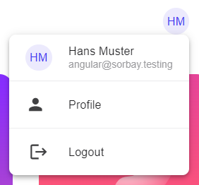
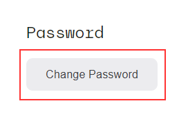
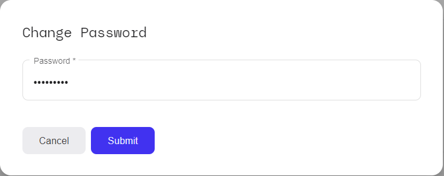
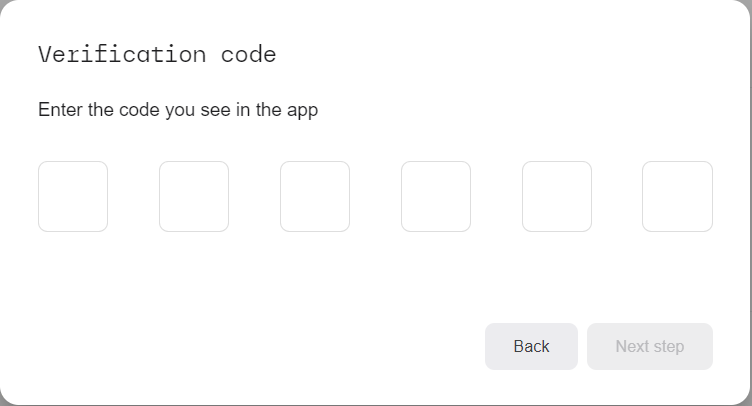
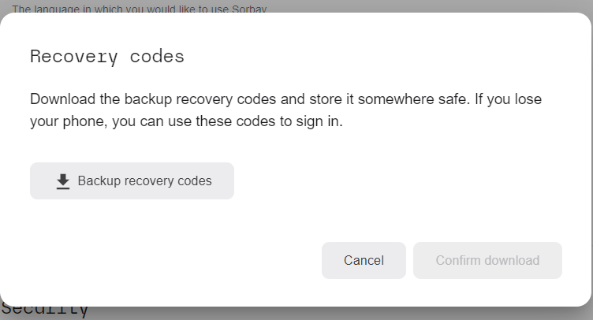
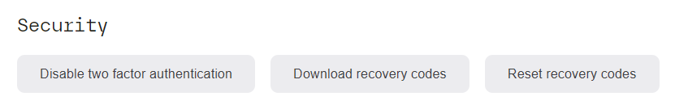

Profile
On the profile page, you can change all the settings related to your personal user profile.
To open the profile page, click the "Profile" option on the selector in the upper right corner:

Mail verification
In case your email address has not been verified yet, you will be shown a notification message at the top of the screen which indicates that you can re-send the email with the verification link. Click this link to receive another email and then click the link in that mail to verify your mail address.
Profile settings
In the "Profile" section, you can set or change the following attributes:
- Your first name
- Your last name
- Your username
- Your email address
- Your preferred language
Press the "Save" button in the lower right corner to apply and save the changes.
Password / Security
To change your password, click the "Change Password" button in the "Password" section:

This will open a popup dialog where you can enter the new password string:

Apply and save the new password by clicking the "Submit" button.
Security
For increased account security, it is recommended to enable two-factor authentication using the widely available "Google Authenticator" app (iOS, Android). To enable this for your account, click on the "Two-Factor Authentication" button, which opens this dialog with a QR code:
Open your Authenticator app on your iOS or Android device and scan the QR code. This will create a new entry in your Authenticator app under the label "Sorbay". Then continue to the next dialog where you will have to enter the code currently displayed by the Authenticator app, to confirm that the QR code was correctly processed:

Finally, another dialog will provide a download for backup recovery codes that you can use to recover your account in case your iOS or Android device gets lost, stolen or damaged, and you cannot use the Authenticator app anymore.

Download the recovery codes by clicking the "Backup recovery codes" button, and then "Confirm download".
Congratulations, you have now enabled two-factor authentication. The "Security" section in the profile page now looks like this:

- Click "Disable two factor authentication" to switch back to logging in with password-only
- Click "Download recovery codes" to re-download your recovery codes
- Click "Reset recovery codes" to TODO ??????????????????
Account removal
You can remove your account completely in the last section at the bottom of the screen, under "Account deletion".
NOTE: This action will remove your user account and all corresponding data and cannot be undone!